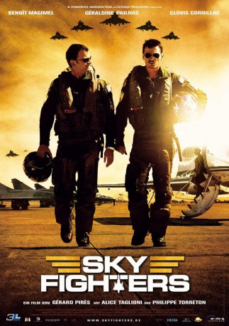

#2515 Sky Fighters
 gesehen am 17.11.2015
gesehen am 17.11.2015
 
 IMDB-Wertung: 5.8 / 10
IMDB-Wertung: 5.8 / 10  Metascore: 0
Metascore: 0 
Französischer Actionfilm von 2005, der auf einer Comic-Serie basiert. Während einer Flug-Show verschwindet eine Mirage 2000 beim Demonstrationsflug. Das französische Militär schickt die Luftwaffen-Kapitäne Antoine Marchelli und Sébastien Vallois zum Aufklärungsflug über das Nordmeer...
Jahr: 2005
Dauer: 102 Minuten
FSK: 12
Land: Frankreich Studio: 3L FilmverleihTonspuren:
Untertitel:
Auflösung: 1080p (1920x816) Größe: 8704 MB
Genre: Action, Abenteuer
Regisseur: Gérard Pirès
Drehbuch: Gilles Malençon, Gilles Malençon, Gérard Pirès, Jean-Michel Charlier, Albert Uderzo
Soundtrack: Chris Corner
Darsteller:
 Benoît Magimel als Capitaine Antoine Walk'n Marchelli
Benoît Magimel als Capitaine Antoine Walk'n Marchelli Clovis Cornillac als Capitaine Sébastien Fahrenheit Vallois
Clovis Cornillac als Capitaine Sébastien Fahrenheit Vallois Géraldine Pailhas als Maelle Coste
Géraldine Pailhas als Maelle Coste Alice Taglioni als Capitaine Estelle 'Pitbull' Kass
Alice Taglioni als Capitaine Estelle 'Pitbull' Kass Philippe Torreton als Bertrand
Philippe Torreton als Bertrand Peter Hudson als Général Buchanan
Peter Hudson als Général Buchanan- Christophe Reymond als Stan
- Frédéric van den Driessche als Général Hardouin
 Olivier Rabourdin als Général Président de la Commission
Olivier Rabourdin als Général Président de la Commission Omar Berdouni als Aziz Al Zawhari
Omar Berdouni als Aziz Al Zawhari- Hervé Berty als Roger
 Arben Bajraktaraj als Fredericks
Arben Bajraktaraj als Fredericks- Mathieu Delarive als Wanai
 Joe Sheridan als Le Visiteur Étranger #1
Joe Sheridan als Le Visiteur Étranger #1- Jean-Raoul Lacote als A Fighter Pilot
- Rey Reyes als Capitaine Leslie 'Stardust' Hedget
- Jean-Baptiste Puech als Ipod
- Fiona Curzon als Mrs Redgrave
- Jean-Michel Tinivelli als Colonel Farje
- Eric Poulain als Capitaine Klébér
- Pierre Poirot als De Séze
- Jean-Yves Chilot als Houdon
- Joseph Beddelem als MacLane
- Oulage Abour als Nawaf
- Ashley Wanninger als Krueger
- Jean Barat als De Vonk
- Maurice Chan als Tony
 Ivan Franek als Baraïev
Ivan Franek als Baraïev- Tony Amoni als Altikriti
- Cédric Chevalme als Bandit
- Frédéric Cherboeuf als Tala
- Yannick Laurent als Grizzly
- Alexandre de Seze als Bunker
- Axel Kiener als L'Ankou
- Simon Buret als Jackpot
- Vincent Cappello als Jeff
- Zizek Belkebla als Le Contrôleur Aérien Lybien
- Salah Sassi als Le Supérieur Lybien
- Laurent Jumeaucourt als Lieutenant Boutier
- Philippe Hérisson als Colonel Esbly
- Patrick Mazet als Flamand
- Sidney Wernicke als Lavigne
- Stéphane Garnier als Le Nouveau Pilote Van #44
- Saul Jephcott als Le Contrôleur Salon Aéronautique
- Eddie Crew als L'Officiel Salon De Farnborough
- Mark Downey als Le Contrôleur Salle Radar De Farnborough
- Karine Petroz als L'Hôtesse Falcon
- Franck Neckebrock als
- Julien Goetz als
- Christophe Lavalle als
Datei: X:\Comic-Filme\Sky Fighters (2005, FSK12, 1920x816).mkv seit 16.11.2015
Festplatte: Comicverfilmungen+MusikCD
 Es gibt insgesamt 44 Filme in der Gruppe 'Comic-Filme'
Es gibt insgesamt 44 Filme in der Gruppe 'Comic-Filme'